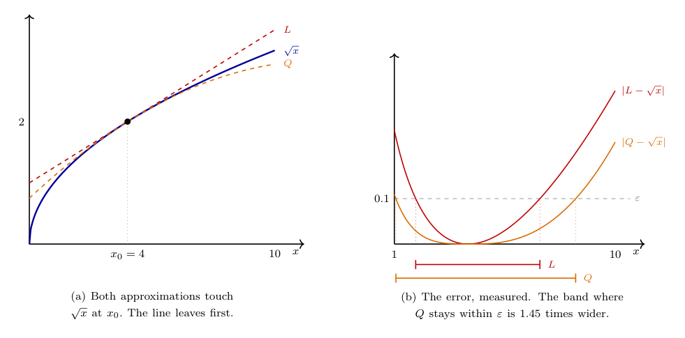

Topic 6: Differentiability and Marginal Reasoning
(Why economists care about slopes, not just optima)
1. Why differentiability enters now
Up to now, we have focused on two fundamental questions:
- Does an optimal choice exist?
- What does the set of optimal choices look like?
We now turn to a different question:
How do optimal choices change when the environment changes?
This is the core question of comparative statics.
To answer it, economists often rely on local approximations:
- small changes in prices,
- small changes in income,
- small changes in parameters.
Differentiability is the mathematical structure that makes such reasoning precise.
2. From global behavior to local behavior
Recall the generic optimization problem
\[ \max_{x \in X} f(x). \]
So far, our analysis has been global:
- existence relies on compactness,
- uniqueness relies on strict concavity,
- stability relies on hemicontinuity.
Differentiability allows us to zoom in and ask:
What happens to \(f(x)\) when we move \(x\) a little bit?
This shift — from global structure to local behavior — is what makes marginal analysis possible.
3. Differentiability: the basic idea
Let \(f:\mathbb{R}^n \to \mathbb{R}\).
We say that \(f\) is differentiable at \(x\) if there exists a linear map1
\[ \mathrm{D}f(x)\colon \mathbb{R}^n \to \mathbb{R} \]
such that
\[ f(x+h) \approx f(x) + Df(x)[h] \]
for small vectors \(h\).
What does it mean:
\(Df(x)[h]\) is the predicted change in \(f\) if I take a small step \(h\) away from \(x\).
This definition, however, uses a vector \(h\) which is important. So it says, basically: If you give me a direction in which to walk, and (what we will later call) the gradient (the linear extrapolation of the change in the function value in our desired direction) at your starting point, then I can tell you where you end up in ‘’height’’ relative to your starting point even without knowing the precise function or the starting point.
Important: Differentiability does not mean that the function is linear. It means that locally, it can be well approximated by something linear.
Sidenote: The relation \(\approx\) is one that is used in various ways in mathematics always trying to mean something like the left hand side is close to the right hand side. You may correctly ask, ‘’what is the metric in which we should measure that closeness?’ And in general I have no answer. In this particular case, the notion of closeness we have in mind behind this is that as we let \(h\to 0\) the error we are making vanishes somewhat continuously. The more classical (and also more precise) definition of differentiability would be that \(f:U\to \mathbb{R}\) is differentiable at \(x\in U\) if
\[ f'(x)=\lim_{h\to 0} \frac{f(x+h)-f(x)}{h} \]
exists. However, the one we have works for multidimensions2 and carries more economic meaning, and once we talk about it, the notion of \(\approx\) we mean here, will be clear.
4. How good is “approximately”? Little-\(o\) and big-\(O\)
Let us now be a bit more precises in which sense \(f(x+h) \approx f(x) + Df(x)[h]\), that is, in which sense is the left-hand side close to the right-hand side? The answer is a piece of notation you will meet constantly—here, in econometrics, in macro, etc.
The idea is simple. We are never really interested in the size of an approximation error on its own. We are interested in how small the error is relative to the stuff we are interested in, in particular if we make stepsizes small.
Write the error as \(r(h)\), so that
\[ f(x+h) = f(x) + Df(x)[h] + r(h). \]
We say that
\[ r(h) = o(\lVert h \rVert) \qquad \text{if} \qquad \lim_{h \to 0} \frac{r(h)}{\lVert h \rVert} = 0, \]
and that
\[ r(h) = O(\lVert h \rVert) \qquad \text{if} \qquad \frac{\lvert r(h) \rvert}{\lVert h \rVert} \text{ stays bounded as } h \to 0. \]
In words, this is a description: > \(r(h) = o(\lVert h\rVert)\): the error is negligible next to the step. Shrink the step and the error shrinks strictly faster. So if \(h\) is small enough our approximation is as precise as we want it to be. > > \(r(h) = O(\lVert h\rVert)\): the error is at worst proportional to the step. It does not blow up, but it need not become negligible either.
So little-\(o\) is a statement about a race, big-\(O\) a statement about a ceiling. Little-\(o\) is the stronger claim: \(o\) implies \(O\), never the other way round.
A word on the equals sign, because it is a genuine abuse of notation that everyone commits and nobody apologises for. Writing \(r(h) = o(\lVert h\rVert)\) does not say that \(r\) equals some particular object called \(o(\lVert h\rVert)\). It says \(r\) belongs to the class of functions that die faster than \(\lVert h\rVert\). Read it as “is of smaller order than”, not as “equals”. The one move you may not make is to cancel such a statement across an equation. Thus, doing algebra with \(o(\cdot)\) and \(O(\cdot)\) is fishy. People still do it, but one shouldn’t take that literally.
Differentiability, restated
With this vocabulary the definition of Section 3 becomes precise and the \(\approx\) disappears:
\(f\) is differentiable at \(x\) if there is a linear map \(Df(x)\) with \[f(x+h) = f(x) + Df(x)[h] + o(\lVert h \rVert).\]
This is what the sidenote promised. And the approximation is not merely “good enough for practical purposes”; it is good in an exact sense, because \(Df(x)\) is the only linear map whose error dies faster than the step itself. That uniqueness is what entitles us to say the derivative rather than a derivative.
Why insist on all this? Because “small” is not a property a number has on its own. It is a property a number has relative to something else. A one-cent error is nothing next to a price change of a euro and enormous next to a price change of a hundredth of a cent. Little-\(o\) makes the comparison explicit, and thereby turns marginal reasoning from a hope into a theorem.3
A quick economic reading. Let \(\pi(k)\) be a firm’s profit at input level \(k\), and raise the input by a small amount \(h\):
\[ \pi(k+h) = \pi(k) + \pi'(k)\,h + o(h). \]
The term \(\pi'(k)h\) is the marginal calculation an economist actually performs. The \(o(h)\) is the licence to perform it: whatever we threw away is not just small, it is small compared to the very change we are studying, so once \(h\) is small enough it cannot overturn the sign of the marginal effect. Without that licence, “marginal profit is positive, so raise the input” would be a guess rather than an argument.
5. Partial derivatives and gradients
When \(f\) is differentiable, the linear map \(Df(x)\) can be represented by a vector of partial derivatives
\[ \nabla f(x) = \left( \frac{\partial f}{\partial x_1}(x), \dots, \frac{\partial f}{\partial x_n}(x) \right). \]
The gradient vector encodes:
- the direction of steepest ascent,
- the marginal effect of each component.
What is a partial derivative?
The partial derivative with respect to \(x_i\) measures how the objective changes when we increase \(x_i\) slightly, holding all other components fixed.
The gradient collects all partial derivatives, that is the changes in each direction.
From the gradient we know how we would walk on the landscape given by the function in each direction by making linear combinations of the partial derivatives.
The ‘’holding everything else fixed’’ language the gradient encapsulates is fundamental in economic reasoning (we often call it ceteris paribus or c.p. reasoning).
6. Marginal interpretation in economics
Marginal reasoning appears everywhere in microeconomics:
- Marginal utility: how utility changes with one more unit of a good,
- Marginal cost: how cost changes with one more unit of output,
- Marginal willingness to pay: how much an agent is willing to give up for a small increase.
All of these are formalized using partial derivatives. In fact, often that is a shortcut we take because differentiability implies continuity which means that ‘small changes’ are possible in the first place. As economists we have decided to often assume continuity, because it makes the statements clearer and the error in translating back to economics is not too big. However, one has to, of course, always be vigilant whether such an assumption that only serves the economist, is costly in terms of the interpretation.
Why is it great to have differentiability? It gives us a disciplined way to talk about ‘’small changes’’ without ambiguity.
7. First-order conditions (interior solutions)
Suppose:
- \(X \subseteq \mathbb{R}^n\) is open,
- \(f\) is differentiable,
- \(x^\ast\) is an interior maximizer.
Then a necessary condition for optimality is
\[ \nabla f(x^\ast) = 0. \]
What this means:
If the function has our differentiability properties, then at an optimum, we must be in a (locally) flat area.
The reason is (hopefully) clear: If we are at the hill top, anywhere we go, we must go down. However, any path that crosses the hilltop from somewhere lower to somewhere lower must first go up and then down again. Differentiability gives us that everywhere we can ‘think linearly’ if our next step is small enough. But then, it must be that when switching from going uphill to downhill, we eventually pass a part where the linear approximation is flat (even if only for very short). And this passing must happen exactly at the hill top.
The condition above is called a first-order condition.
It does not guarantee optimality by itself.
It identifies candidates for optimality (so called critical points).
So if we are looking for an optimum in a smooth problem like the one described above, it is first order for us to find points that satisfy that condition. Once we have those, we can worry about which of those to eliminate.
8. Why first-order conditions are not enough
A point where \(\nabla f(x)=0\) could be:
- a maximum,
- a minimum,
- a saddle point.
A Maximum is what we want, a hill top. A minimum is the lowest point in the valley and the opposite of what we want. A saddle point is something tricky. It is the lowest point of a valley in some direction, but the hill top in another. So standing on the saddle point, means it goes down in some direction, and up in others (like at that one point at the back of a saddle), in some it may be even flat. It is, however, clearly not a hill top.
Moreover, we need to distinguish between local and global optimality. If we are on a hill top in a mountain range, that means we are at a maximum (it goes down in all directions, locally), but nothing says that this is the highest hill top.
The first-order condition tells us nothing about these things.
This is why first-order conditions must be combined with global structure:
- concavity of the objective ensures that any critical point is a global maximum,
- differentiability ensures that no jumps or kinks occur that bring about points that can trump the critical points without being critical points themselves
- convexity of the choice set ensures that no local traps exist where we are not allowed to go to.
This connects directly back to Topics 3 and 4.
9. Second-order intuition (informal)
Second-order information captures curvature.
If \(f\) is twice differentiable, curvature is summarized by the Hessian matrix
\[ D^2 f(x). \]
We will not work with Hessians much as objects in their own right, but with their help one can verify optimality of a critical point (yet often this is not very elegant). The next section shows exactly how.
The key intuition is:
Concavity means the function bends downward everywhere.
Under global concavity of the objective:
- first-order conditions become sufficient,
- local optima are global.
10. Taylor approximation: buying a better error term
Above we showed that curvature is summarized by the Hessian, and that with its help one can verify optimality of a critical point. But we had not been precise. To do that, we use Taylor’s theorem (often called Taylor approximation) is how. It is also the tool that makes precise a trade we have been making implicitly all along: one more derivative assumed, one more term in the expansion, one order less error.
The statement
Let \(f\) be twice continuously differentiable near \(x\). Then
\[ f(x+h) = f(x) + \nabla f(x)\cdot h + \tfrac{1}{2}\, h^{\top} D^2f(x)\, h + o(\lVert h\rVert^2). \]
In English:
Step a little way \(h\) from \(x\). The function value changes by a linear term, plus a quadratic term built from the Hessian, plus an error that is negligible even next to \(\lVert h\rVert^2\).
Set this beside the first-order statement from Section 4:
\[ f(x+h) = f(x) + \nabla f(x)\cdot h + o(\lVert h\rVert). \]
The pattern is the whole point of the theorem, so let us reiterate:
Each further derivative you are willing to assume buys you one further term in the expansion, and pushes the error down by one order in \(\lVert h\rVert\).
It is a real trade, and it is not free. The price is smoothness of \(f\). If \(f\) is merely differentiable you get the linear term and \(o(\lVert h\rVert)\), and that is all you get.
It is worth seeing this claim rather than only reading it. Take a utility function \(u(x) = \sqrt{x}\) and expand it at \(x_0 = 4\). Since \(u(4) = 2\), \(u'(4) = \tfrac14\) and \(u''(4) = -\tfrac{1}{32}\), the two approximations are
\[ L(x) = 2 + \tfrac{1}{4}(x-4) \qquad\text{and}\qquad Q(x) = 2 + \tfrac{1}{4}(x-4) - \tfrac{1}{64}(x-4)^2 . \]

Panel (a) is the qualitative picture: at \(x_0\) all three curves agree, and as we walk away the straight line is the first to part company while the parabola keeps hugging the curve. Panel (b) says the same thing in a form you can check. Fix a tolerance \(\varepsilon = 0.1\) and ask how far from \(x_0\) each approximation stays inside it. The line manages \(x \in [1.87,\, 6.93]\), the parabola \([1.06,\, 8.39]\) — a range about \(1.45\) times as wide.
Look also at the shape of the two error curves near \(x_0\), because that is the theorem itself drawn: the linear error leaves zero like \(\lVert h\rVert^2\), the quadratic error like \(\lVert h\rVert^3\). That is what “one order less error” buys. It is also why the advantage grows as you demand more: tighten the tolerance to \(\varepsilon = 0.02\) and the ratio of the two ranges widens to about \(1.9\).
Why it is true
The one-dimensional case carries the entire idea. Fix \(x\) and \(h\) and define
\[ g(t) := f(x + th), \qquad t \in [0,1], \]
so we walk along the segment from \(x\) to \(x+h\) and record the height as we go. Then \(g\) is a function of one variable with \(g(0) = f(x)\) and \(g(1) = f(x+h)\), and the chain rule gives \(g'(0) = \nabla f(x)\cdot h\) and \(g''(0) = h^{\top} D^2f(x)\, h\) — the two terms of the expansion, already assembled.
So the multidimensional statement is the one-dimensional statement about \(g\), and the one-dimensional statement is the mean value theorem applied one order further than usual: control \(g''\) on the segment and keep honest track of what is left over.
Let’s go over this. The existence of the second derivative at \(x\) is what lets us write the quadratic term at all, and—this is worth knowing—it is already enough on its own for the leftover to be \(o(\lVert h\rVert^2)\). Assuming a little more, namely that \(D^2f\) is continuous near \(x\), is the hypothesis we stated above. It costs nothing in any application we will meet, and it buys a cleaner proof and the exact remainder form in the footnote below. What we may not drop is the second derivative itself: with only one derivative there is no quadratic term to write, and the best we can say remains the \(o(\lVert h\rVert)\) statement of Section 4.4
Why that helps with second-order conditions
Now let \(x^\ast\) be a critical point, so \(\nabla f(x^\ast) = 0\). The linear term vanishes and Taylor leaves
\[ f(x^\ast + h) - f(x^\ast) = \tfrac{1}{2}\, h^{\top} D^2f(x^\ast)\, h + o(\lVert h\rVert^2). \]
Everything about local optimality is now visible in one line: the change in height is, up to a negligible error, a quadratic form in the direction we walk.
- Negative for every \(h \neq 0\) (the Hessian is negative definite): every direction goes down, so \(x^\ast\) is a local maximum.
- Positive for every \(h \neq 0\): every direction goes up, a local minimum.
- Negative in some directions and positive in others: the saddle of Section 8 — and now we can say precisely which directions are the “down” ones and which the “up” ones, because we read them off the quadratic form.
This is the exact version of the hill-top story told in Section 7.
Notice where the \(o(\lVert h\rVert^2)\) does its work. It is what allows the quadratic term to decide the comparison: because the error dies faster than \(\lVert h\rVert^2\), a strictly signed quadratic form cannot be overturned by it once \(h\) is small enough. And if the quadratic form is only semidefinite — zero in some direction — then along that direction the error is no longer negligible next to it, and second-order information genuinely does not settle the question. That is not a failure of the method. It is the method telling us the truth, namely that we have to look further.
An economic example: the cost of a small mistake
Take a firm choosing an input \(k\) at unit cost with output price \(p\), so that profit is \(\pi(k) = p f(k) - k\), and let \(k^\ast\) be an interior optimum, meaning \(p f'(k^\ast) = 1\). What does it cost the firm to miss the optimum slightly and choose \(k^\ast + h\)? Taylor answers at once:
\[ \pi(k^\ast + h) - \pi(k^\ast) = \underbrace{0}_{\text{first order}} \; + \; \tfrac{1}{2}\, p f''(k^\ast)\, h^2 \; + \; o(h^2). \]
The first-order term is zero because \(k^\ast\) was chosen optimally. So the cost of a small mistake is second order: halve the mistake and you quarter the loss.
This is one of the most heavily used facts in applied microeconomics. It is why small optimization errors are usually treated as harmless, and it is the same vanishing first-order term that will make the envelope theorem work in Topic 7. It is also a statement we could not even have phrased two sections ago: “the loss is of order \(h^2\)” is the content, and \(o\) is what lets us say it.
11. Differentiability and constraints (preview)
Most economic problems involve constraints:
\[ \max_{x \in X} f(x). \]
When constraints bind, optimality conditions involve:
- trade-offs,
- shadow prices,
- Lagrange multipliers.
We will introduce this machinery later.
For now, the key message is:
Differentiability allows us to express trade-offs precisely.
12. An economic example: marginal utility
Consider a utility function \(u(x_1,x_2)\).
The partial derivative
\[ \frac{\partial u}{\partial x_1}(x) \]
measures the marginal utility of good 1 at bundle \(x\).5
Comparing marginal utilities across goods explains:
- substitution,
- demand responses,
- interior versus corner solutions.
Without differentiability, these ideas lose precision.
There is another form of differentiation, which is the total derivative. The way to think about this is to think about the partial derivative as exactly what it is, the change in one direction of the choice vector. So in the above example, \(\frac{\partial u}{\partial x_1}(x)\) means we keep \(x_2\) unchanged and only change \(x_1\) (marginally). But of course, there are many ways to change things “slightly.” We could walk in direction 1, in direction 2 or any weighted combination of it. The total derivative tells us what that means for our function. And it is (because of the linear map we defined in the beginning) a remarkably simple object. So here it is6
\[ \mathrm{d} u(x) = \frac{\partial u}{\partial x_1}(x) \mathrm{d}x_1 + \frac{\partial u}{\partial x_2}(x) \mathrm{d}x_2 \]
The \(\mathrm{d}\) here is a way to think about small changes which (however) have a relative size. So if we go in the \(x_1\) direction only, then \(\mathrm{d} x_2=0\) is \(0\) and \(\mathrm{d}x_1=1\).7
13. Why this matters for comparative statics
Differentiability underlies a bunch of concepts we will see in Microeconomics:
- Slutsky decompositions,
- envelope theorems (Topic 7),
- local comparative statics.
It allows us to replace
‘’What happens when something changes?’’
with
‘’What is the derivative with respect to that change?’’
Topic 7 applies this logic to optimized values. It also introduces the KKT conditions needed when an optimum lies on a constraint, where the unconstrained condition \(\nabla f=0\) is no longer appropriate.
This is a powerful simplification — but one that rests on strong assumptions.
14. Where this appears in Mas-Colell, Whinston, and Green (MWG)
The main references are:
- MWG, Chapter 3 (consumer theory)
- MWG, Mathematical Appendix B (differentiation)
- MWG, Chapter 5 (duality and marginal conditions)
Differentiability is often used implicitly; these notes make the logic explicit.
15. What you should take away
After this topic, you should be comfortable with:
- interpreting derivatives as local approximations,
- reading \(o\) and \(O\) as statements about how fast an error vanishes relative to the step,
- reading gradients as vectors of marginal effects,
- understanding when first-order conditions apply,
- using a second-order expansion to classify a critical point,
- seeing how differentiability complements convexity.
Differentiability does not replace global reasoning.
It refines it.
A linear map is a function that has the following property: \(L(ax+by)=aL(x)+bL(y)\) for any vectors \(x\) and \(y\) and scalars \(a\) and \(b\)↩︎
Look up Frechet derivatives for the more precise definition of the unidimensional one I have given in this sidenote↩︎
You will meet stochastic cousins of these symbols in econometrics, written \(o_p\) and \(O_p\), where “vanishes” means convergence in probability rather than an ordinary limit. The bookkeeping idea is identical; only the notion of vanishing changes. Nothing here is stochastic — \(o\) and \(O\) are statements about functions, not about random variables.↩︎
Taylor’s theorem is used freely in MWG but not stated there as a numbered result. For a precise statement and proof check, e.g., Rudin, Principles of Mathematical Analysis, Chapter 5 (p.110 in the third edition). If you prefer the error written as an exact quantity rather than an order statement, the standard alternative is the Lagrange remainder \(\tfrac12 h^{\top} D^2f(\xi)\,h\) for some unknown point \(\xi\) on the segment between \(x\) and \(x+h\). Same theorem, different bookkeeping: an unknown point instead of an unknown small quantity.↩︎
These are the standard derivatives we know from undergraduates and school.↩︎
This is just spelling out the definition of derivative!!↩︎
Important: While \(\mathrm{d}x_1\) is an object we can move around (multiply by \(\mathrm{d}x_1\)) for example, \(\partial x_1\) is not, instead, here the object is the entire \(\frac{\partial u}{\partial x_1}(x)\).↩︎